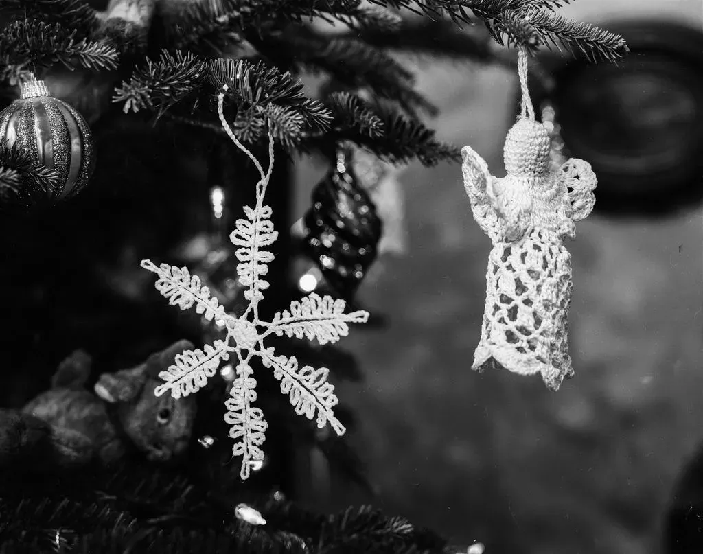
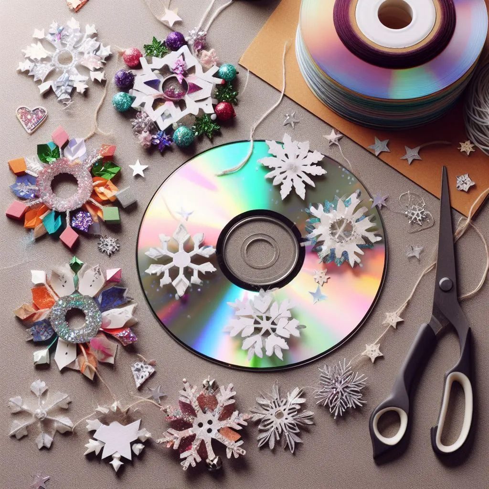

10 Creative DIY Christmas Decoration Ideas to Spruce Up Your Holiday Season!
Get ready to deck the halls this holiday season with these 10 creative DIY Christmas decoration ideas! Whether you're a seasoned crafter or just starting out, these festive projects are sure to bring joy and cheer to your home.
From handmade ornaments to personalized stockings, there's something for everyone on this list. Let your creativity shine as you transform simple materials into beautiful holiday treasures. With a little bit of time and effort, you can create unique decorations that will impress your family and friends.
Incorporate natural elements like pinecones and evergreen branches for a rustic touch, or add sparkle and shine with glitter and tinsel for a more glamorous look. You'll find ideas that are perfect for both traditional and modern decor styles, so you can customize your holiday aesthetic to match your personal taste.
Not only will these DIY decorations make your home look festive, but they'll also add a personal touch that you won't find in store-bought items. So, grab your glue gun and get ready to make your holiday season merry and bright with these 10 creative DIY Christmas decoration ideas!
Benefits of creating your own Christmas decorations
Creating your own Christmas decorations has many benefits that go beyond just the cost savings. When you make your own decorations, you have the opportunity to personalize your space and create a unique atmosphere that reflects your style and personality. It's a chance to let your creativity shine and add a personal touch to your holiday celebrations.
Not only does DIY Christmas decorating allow you to express your individuality, but it also gives you the satisfaction of creating something with your own hands. There's a sense of accomplishment and pride that comes from seeing your homemade decorations brighten up your home and bring smiles to the faces of your loved ones.

Image by Benjamin Balazs from Pixabay
Budget-friendly DIY Christmas decoration ideas
If you're looking to save some money this holiday season, DIY Christmas decorations are a great way to do it. With a little bit of creativity and some basic crafting supplies, you can create beautiful decorations that rival the store-bought ones at a fraction of the cost.
One budget-friendly idea is to make your own ornaments using materials you already have at home. For example, you can turn old CDs into shiny snowflakes by painting them white and adding glitter. Another idea is to create a garland using colorful paper or fabric scraps. Simply cut them into strips and string them together for a festive and inexpensive decoration.

For a unique and affordable centerpiece, consider making your own holiday-themed candles. You can purchase plain pillar candles and decorate them with ribbons, beads, or even dried flowers. Not only will they add a warm glow to your holiday table, but they'll also make great gifts for friends and family.
Rustic-themed DIY Christmas decorations
If you prefer a cozy and nature-inspired look for your Christmas decor, a rustic theme might be just what you're looking for. Rustic decorations often incorporate natural elements like pinecones, twigs, and evergreen branches to create a warm and inviting atmosphere.
One simple and rustic DIY idea is to create a centerpiece using a wooden crate or tray. Fill it with pinecones, candles, and small ornaments for a charming holiday display. You can also use twine to wrap around plain glass jars and fill them with fairy lights or some of the best Christmas lights for a cozy glow.
Another rustic-inspired decoration idea is to create your own wooden ornaments. Cut small wooden shapes like stars or snowflakes and paint them in earthy tones. Add some twine or ribbon for hanging, and you'll have rustic ornaments that will complement any Christmas tree.
Upcycled and recycled Christmas decorations
If you're passionate about sustainability and reducing waste, consider upcycling or recycling materials to create your Christmas decorations. Not only will you be helping the environment, but you'll also have unique and one-of-a-kind decorations that no one else will have.
One upcycling idea is to turn old wine corks into mini Christmas trees. Simply glue the corks together in a pyramid shape and decorate them with tiny ornaments or beads. You can also repurpose old glass bottles by painting them in festive colors and using them as candle holders or vases.
For a fun and eco-friendly craft project, try making ornaments out of recycled paper. Cut strips of colorful magazine pages or old wrapping paper and fold them into origami stars or flowers. Thread them with string or ribbon, and you'll have beautiful and sustainable ornaments to hang on your tree.
Nature-inspired DIY Christmas decorations
Bringing the beauty of nature indoors is a wonderful way to celebrate the holiday season. Nature-inspired decorations can add a touch of elegance and tranquility to your home, creating a serene and peaceful atmosphere.
One idea is to create a winter wonderland scene using pinecones, faux snow, and miniature figurines. Arrange the pinecones and figurines on a tray or in a glass bowl and sprinkle them with faux snow for a magical effect. You can also incorporate evergreen branches and berries for added color and texture.
Another nature-inspired decoration idea is to make your own dried orange slice ornaments. Simply slice oranges into thin rounds and bake them in a low oven until they are dried and slightly golden. Thread them with twine or ribbon, and you'll have beautiful and fragrant ornaments that will add a touch of nature to your Christmas tree.
Personalized DIY Christmas ornaments and stockings
Adding a personal touch to your Christmas decorations can make them extra special and meaningful. Personalized ornaments and stockings are a great way to showcase your family's unique personality and create cherished memories for years to come.
One idea is to create photo ornaments using clear glass or plastic baubles. Print out small photos of your loved ones and insert them into the baubles along with some glitter or tiny trinkets. Not only will these ornaments add a personal touch to your tree, but they'll also serve as a reminder of special moments and loved ones.
You can also hang them on a wall when decorating your dining room for Christmas along with one of the best curtain lights for some glow around your pictures or use them to decorate your living room along with some best Christmas lights.
For personalized stockings, consider using fabric markers or embroidery to add names or initials to plain stockings. You can also use fabric paint to create unique designs or patterns that reflect each family member's interests or hobbies. Hang these stockings by the fireplace or on a staircase banister for a festive and personalized touch.
DIY Christmas wreaths and garlands
Wreaths and garlands are classic Christmas decorations that can instantly transform your home into a winter wonderland. Making your own wreaths and garlands allows you to customize them to match your personal style and the overall theme of your decor.
For a traditional and elegant look, consider making a wreath using fresh or faux evergreen branches. Attach ornaments, pinecones, or berries to the wreath using floral wire, and finish it off with a festive bow. Hang it on your front door, above the fireplace, or on your office door for a warm and welcoming entryway.
If you prefer a more modern and minimalist look, try making a wreath using wire or embroidery hoops. Wrap the hoops with twine or ribbon and attach simple ornaments or greenery for a sleek and contemporary decoration. You can also hang these wreaths on windows or walls for a unique and eye-catching display.
Kid-friendly DIY Christmas crafts
Getting the whole family involved in the Christmas decorating process can be a fun and memorable experience. Kid-friendly DIY crafts are a great way to keep little ones entertained while creating beautiful decorations that they can be proud of.
One idea is to make salt dough ornaments. Mix together salt, flour, and water to create a dough, then shape it into various holiday-themed shapes like stars, snowmen, or candy canes. Bake them in the oven until they harden, and let your kids paint them with colorful acrylic paints. These ornaments will add a playful and homemade touch to your Christmas tree.
Another kid-friendly craft idea is to create paper snowflakes. Fold white paper into quarters and cut out different shapes and patterns. Unfold the paper, and you'll have beautiful snowflakes that can be hung from windows or attached to walls. Let your children get creative with different designs and sizes for a whimsical and wintery decoration.
Conclusion: Spread holiday cheer with your DIY Christmas decorations
Creating your own Christmas decorations is a wonderful way to add a personal touch to your home and spread holiday cheer. Whether you opt for budget-friendly projects, rustic-inspired decor, or nature-inspired ornaments, the possibilities are endless.
So, grab your glue gun and get ready to make this holiday season merry and bright with these 10 creative DIY Christmas decoration ideas. From handmade ornaments to personalized stockings, these projects are sure to impress your family and friends. Let your creativity shine as you transform simple materials into beautiful holiday treasures. Happy crafting, and may your holiday season be filled with joy and cheer!